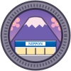

Credits
Take Me Back to Japan · 日本へ、もう一度
Made by
- Tan (Tanuj R) Made the game and its title song.
Built on
- Sakura Crossing by Kenton Wang, MIT License (github.com/Kenton-GMI/sakura-crossing) Copyright (c) 2026 Kenton Wang. The full notice ships with this site: LICENSE.txt.
- three.js, MIT License Copyright © 2010-2025 three.js authors (threejs.org).
Mt. Fuji elevation data
- 出典：国土地理院 「標高タイル」（国土地理院）（https://maps.gsi.go.jp/development/demtile.html）を加工して作成 Source: Geospatial Information Authority of Japan (GSI), elevation tiles, processed into the game's model of the mountain.
Music and sound
- "Nippon Let's Go", the title song By Tan, made with Suno.
- Sound effects from 効果音ラボ (soundeffect-lab.info)
Fonts
- M PLUS Rounded 1c Copyright 2016 The Rounded M+ Project Authors. SIL Open Font License 1.1.
- Yuji Syuku Copyright 2021 The Yuji Project Authors (Kinuta Font Factory). SIL Open Font License 1.1.
- Both are subset for the town's signs. Licence text: OFL.txt.
Licence
MIT License Copyright (c) 2026 Kenton Wang Copyright (c) 2026 Tanuj (Lawson Fuji changes) Permission is hereby granted, free of charge, to any person obtaining a copy of this software and associated documentation files (the "Software"), to deal in the Software without restriction, including without limitation the rights to use, copy, modify, merge, publish, distribute, sublicense, and/or sell copies of the Software, and to permit persons to whom the Software is furnished to do so, subject to the following conditions: The above copyright notice and this permission notice shall be included in all copies or substantial portions of the Software. THE SOFTWARE IS PROVIDED "AS IS", WITHOUT WARRANTY OF ANY KIND, EXPRESS OR IMPLIED, INCLUDING BUT NOT LIMITED TO THE WARRANTIES OF MERCHANTABILITY, FITNESS FOR A PARTICULAR PURPOSE AND NONINFRINGEMENT. IN NO EVENT SHALL THE AUTHORS OR COPYRIGHT HOLDERS BE LIABLE FOR ANY CLAIM, DAMAGES OR OTHER LIABILITY, WHETHER IN AN ACTION OF CONTRACT, TORT OR OTHERWISE, ARISING FROM, OUT OF OR IN CONNECTION WITH THE SOFTWARE OR THE USE OR OTHER DEALINGS IN THE SOFTWARE.
An unofficial fan project. The store, NIPPON, is fictional; its look nods to Japan's convenience stores, and it is not affiliated with or endorsed by any chain. All products in the game are fictional.
Back to the game